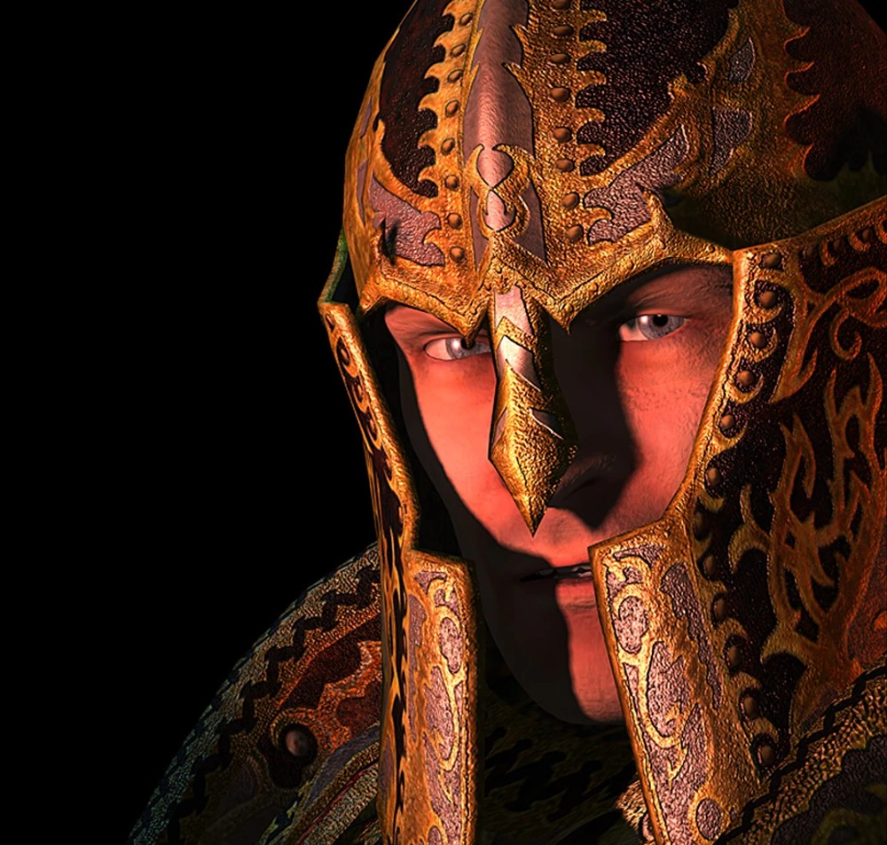

The History of Tamriel
The Elder Scrolls is another IP owned by Bethesda that was instead created by them rather than bought like how Fallout was bought from Interplay. The Elder Scrolls covers a different protagonist's story each game rather than only one all the way through. Each protagonist has a crisis that they have to advert or assist in preventing; the most popular of the crises is the Return of the Dragons from TES:V Skyrim. The Return of the Dragons happens after Alduin; who was banished before the dawn of the first era into another time comes back because he was sent to current era, the 4th era year 201. After Alduin returns, he spots Helgan and burns the imperial town; after he starts to ressurect his Dragon Priests and other Dragons from their burial mounds to raise an army to trump the protagonist who has been declared dovahkiin, Dragonborn. If you find Alduin's Wall you can see past crises that have happened; such as the awakening of the Numidium, the reconstruction of the Numidium named Akulakhan by Dagoth Ur and his death, the Oblivion Crises, and Alduin's death by the hands of the dovahkiin.
I can't say everything about the games or else I'd be here forever.
Map of Tamriel
This is the full map of Tamriel, the planet that the games take place on. The main line games, besides Arena and Daggerfall because you can go anywhere; take place in a specific province, like the province of Skyrim for example.
The Nerevarine
Is the reincarnation of the Nerevar after he was smited by the Tribunal. The Tribunal defied the Daedric princess Azura. As punishment for their betrayal, Azura changed the Chimer's skin to resemble ash, but Azura couldn't affect the Tribunal. Their quest is to save the island of Vvardenfell from Dagoth Ur, who is rebuilding the Dwarven Numidium named Akulakhan using the heart of the god Lorkhan inside of the volcano Red Mountain, hidden by the Tribunal.
The Champion of Cyrodiil

The Champion of Cyrodiil, also known as The Hero Of Kvatch repelled the forces of Oblivion during the Oblivion Crisis of the 3rd era. After Oblivion was successfully repelled, The Champion of Cyrodiil reassembled the Knights of the Nine and took the role as the Crusader of the Nine. Afterwards, The Champion of Cyrodiil entered the portal to the Shivering Isles near Bravil to never be seen again...
The Last Dragonborn
After defeating Alduin the Dragonborn is ambushed by cultists from the island of Solstheim. After talking to the Nords from the village of Skall the Dragonborn learns about the dragon priests of Solstheim. One of the first dragon priests known as Miraak has come back during the dragon crisis like his brothers. His voice is so honed that he can bend the will of dragons to allow them to let him ride upon their backs. Miraak was defeated by the Dragonborn after he was betrayed by the daedric prince, Hermaeus Mora.